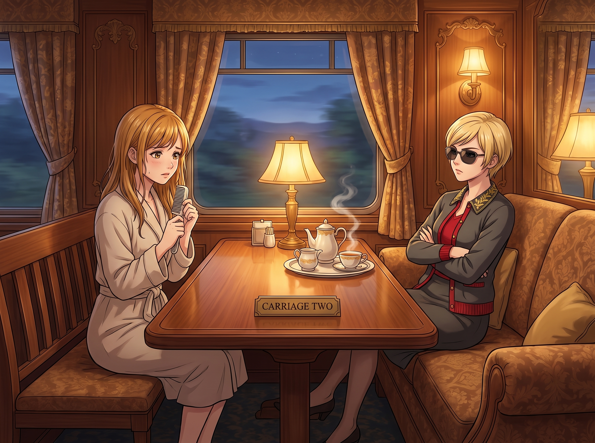

令千金風波之三

週日傍晚，二號車廂長桌前上演了一場「名媛式冷戰與全方位台階工程」。
名媛的面子被那句「母性光輝」和「令千金」踩得稀碎。洗完澡後的 Kate 頂著一頭微濕的金褐色長髮，抱著那把純銀發梳怯生生地坐在長凳邊時，Victoria 果然抱著手臂坐在對面的沙發上，墨鏡重新架在鼻樑上，下巴微揚，開啟了極致冷漠模式：
「別看我，Marsh。既然本小姐在某些人眼裡已經提前邁入更年期，那麼這雙尊貴的手顯然不適合再為『青春期叛逆少女』服務了。妳自己拿橡皮筋隨便扎個馬尾吧。」
面對名媛渾身炸毛的尊嚴防線，二號車廂的另外兩人立刻展開了教科書級別的「彩虹屁搭台階作戰」。
一、雙重拍馬屁
Max 抱著剛沖洗好的膠卷底片小跑過來，把一張光影絕美的特寫遞到 Victoria 眼前，滿臉真誠地驚嘆：「Victoria，妳看！這張是妳昨天編的法式側魚骨辮！整個波特蘭甚至西雅圖，根本沒有任何一個造型師能抓準這種拉斐爾前派的慵懶高貴感！如果換成我和 Chloe 來動手，Kate 的頭髮大概五分鐘內就會變成一個鳥巢。這不是梳頭髮，這是只有妳能完成的『二號車廂專屬裝置藝術』啊！」
被年鑑砸了一下午的野生機械師也學乖了。Chloe 屁顛屁顛地從工具箱底掏出一個用絲絨布包著的小盒子，雙手奉上：「報告 Chase 總裁！剛才本工坊特意用航空級鋁合金，在車床上給您精雕了一套帶阻尼防滑齒的『超輕量發夾』！保證夾力均勻、絕不扯斷頭髮，上面還陽極氧化成了您最喜歡的香檳金！這等神兵利器，除了您這雙年保險額幾十萬的手，誰配拿來操作？！」
二、名媛的傲嬌式順坡下驢
聽著兩人天花亂墜的奉承，Victoria 墨鏡後的嘴角微不可察地動了一下。她伸出兩根戴著戒指的修長手指，嫌棄地挑開絲絨布看了一眼那枚做工確實無可挑剔的香檳金發夾，冷哼了一聲：「……粗糙的工業設計，不過勉強算妳有點眼力見。」
名媛踩著拖鞋站起身，優雅地摘下墨鏡扔在桌上，一把從 Kate 手裡抽過那把純銀發梳，居高臨下地挑眉：「坐好，Marsh。我只是不想看到明天工坊門口出現一個頂著鳥窩頭、嚴重拉低 Chase 家族投資品位的傢伙而已。要是敢亂動扯到頭髮，後果自負。」
三、溫柔的長髮沙龍與無聲的默契
雖然嘴上說著最狠的威脅，但當銀梳真正觸碰到 Kate 柔軟的髮絲時，Victoria 的動作卻放得極其輕柔細緻。
她熟練地將長髮分區，手指翻飛間，幾縷碎髮被溫柔地挽起，並將那枚 Chloe 親手車削的香檳金小發夾穩穩固定在耳側。長桌邊飄散著洋甘菊與柑橘精油的淡淡香氣。
Kate 乖巧地坐著，看著鏡子裡 Victoria 專注而認真的神情，微微側過頭，軟軟地補了一句：「……謝謝妳，Victoria。全波特蘭只有妳梳的辮子最好看。」
Victoria 的手頓了頓，耳根泛起一層不易察覺的微紅。她別過頭，輕輕在 Kate 的發頂拍了一下，語氣依舊傲嬌卻藏不住滿滿的溫柔：「知道就好。明天早餐如果沒有雙份草莓醬，這套發型我就親手給妳拆了。」
長桌前，Chloe 衝著 Max 擠眉弄眼地比了個「大功告成」的手勢，而 Max 則悄悄按下了快門。無論嘴上怎麼吵鬧，這座二號車廂總能用她們特有的彆扭與溫柔，把每一場即將爆發的風暴，化作最暖心的日常回憶。